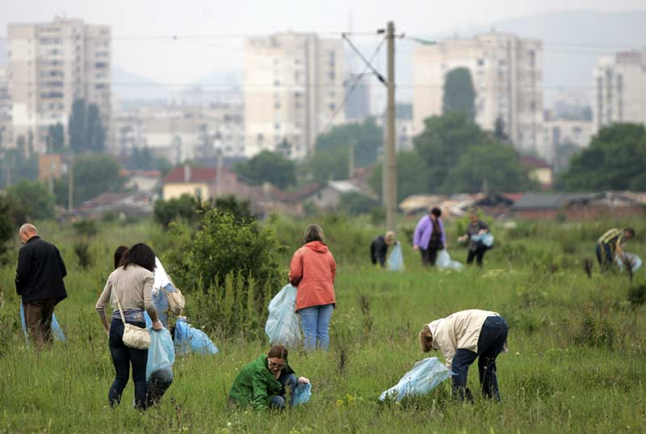
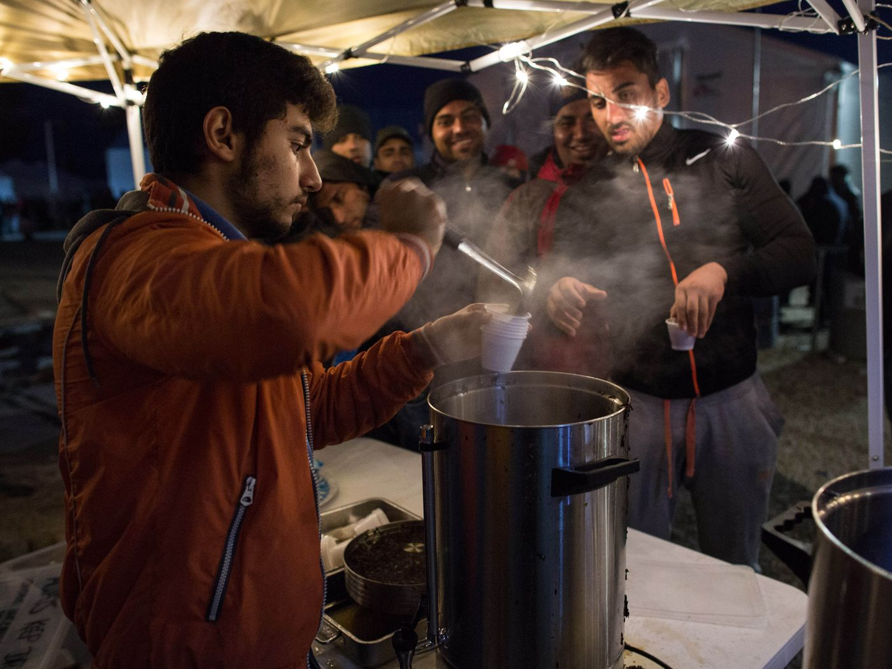
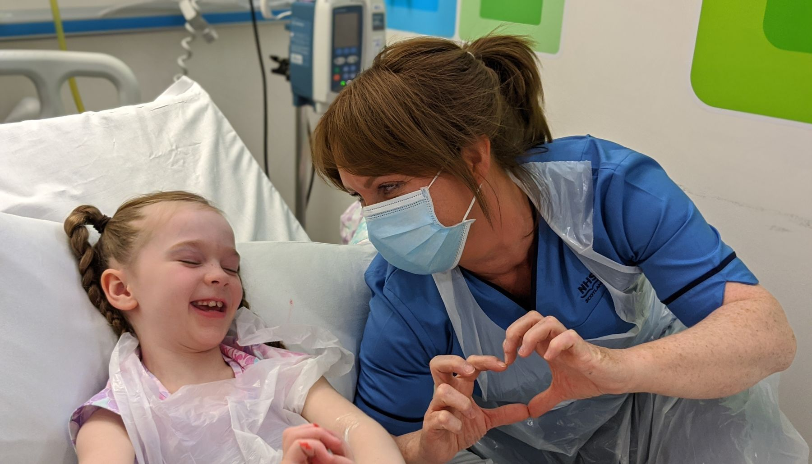
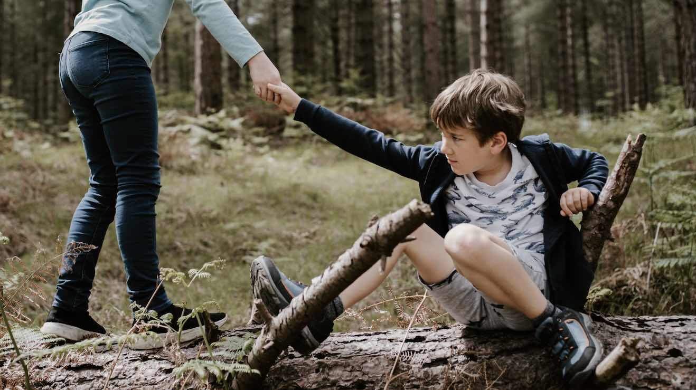

Date/time: 12:00What you need: You must come in old clothes so as not to get dirty, you must also have a bag available, you will be given a net for collecting garbage on the spot. At the end of the working day, you will be given food in a pleasant company by the same people with whom you worked todayAdmin/call: Arslan - 7 775 234 55 64Place: park Astana near by Magnum. |

|
Date/time: 20:00What you need: You should be able to cook soups. Kashi and meatballs. It is also advisable to bring simple food such as bread, milk, and cereals.Admin/call: Yernar - 7 707 994 65 68Place: Under Nurly-Zhol Subway |

|
Date/time: any time from 8.00 - 18.00What you need: You should be able to communicate with children, it is advisable to come for toys, you can also bring things for children that you do not need, and most importantly, a good moodAdmin/call: Dayana - 7 747 119 09 02Place: Children's Hospital Number 2 |

|
Date/time: 24/7What you need: The search group has been looking for him since yesterday. In the district of the seventh polyclinic, the boy was called Anuar. He is seven and eight years old and has a yellow T-shirt on his head. Blue pants. He was wearing slippers. The child went to the store for bread and got lost. amount of patienceAdmin/call: Amir - 7 707 654 78 76Place: Shakarim KudaiberdyUly 21/4 street. |

|